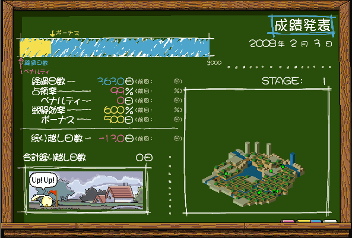
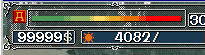

| 概要 | 情報 | ステージ攻略 |
| 地図 | テクニック | モナモナ攻略へ |
|
ショートカットキー Ctrl＋G でゲームスタート Ctrl＋P でゲームのポーズ これを使いこなしてマウスに頼らないモナモナプレーを・・・て無理ですね。 |
|
難易度? LM_WIN.exe を解析すると難易度選択の画面が出てきます。予定では難易度も選べたのでしょうか? |
|
デバッグモード解放 exe データをこっそりいじってデバッグモードを解放してみました。セーブデータもそのまま利用できますが、何があっても知りません。 使い方は、下のダウンロードをクリックし、「lm_ex_win.zip」を入手後、これを解凍し「Lm_win_ex.exe」をモナークモナークの実行ファイルと同じ場所に移動させてください。 使い方に関する質問はいっさい受け付けませんのであしからず。 |
|
繰り越し日数がマイナスになると 色々な手を使って繰り越し日数をマイナスにすると、事実上クリアしたステージでももう一度やり直さなければなりません。STAGE：1 で繰り越し日数をマイナスにすると、モナ君はやけくそで「Up! Up!」と言ってくれます。  |
|
最大の所持金、兵力 所持金の最大は99999$です。兵力は現在調査中ですが、恐らく99999だと思います。  |
| 概要 | 情報 | ステージ攻略 |
| 地図 | テクニック | モナモナ攻略へ |